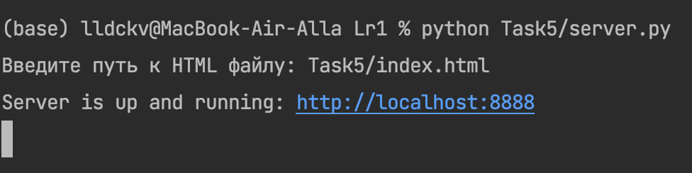
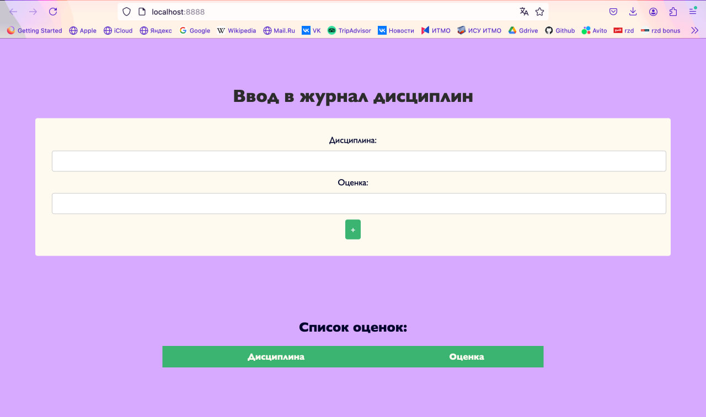
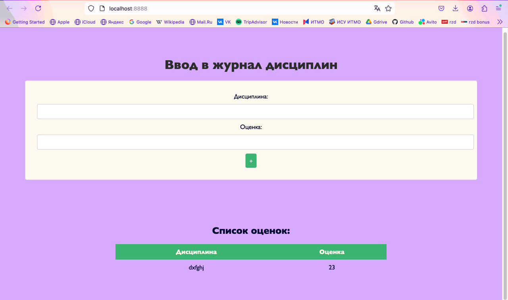

Task 5
Условие
Написать простой веб-сервер для обработки GET и POST HTTP-запросов с помощью библиотеки socket в Python.
Задание:
Сервер должен:
Принять и записать информацию о дисциплине и оценке по дисциплине.
Отдать информацию обо всех оценках по дисциплинам в виде HTML-страницы.
Пример работы:   
Листинг кода, index.html:
<!DOCTYPE html>
<html lang="ru">
<head>
<meta charset="UTF-8">
<title>Журнал оценок</title>
<style>
body {
font-family: "Gill Sans", sans-serif;
background-color: #D7ABFFFF;
margin: 0;
padding: 5%;
text-align: center;
color: #00032c;
}
h1 {
color: #2c2c2c;
}
form {
background: floralwhite;
padding: 30px;
border-radius: 4px;
margin-bottom: 10%;
}
input[type="text"] {
width: 100%;
padding: 10px;
margin: 10px 0;
border: 1px solid #ccc;
border-radius: 4px;
}
input[type="submit"] {
background-color: mediumseagreen;
color: white;
padding: 10px;
border: none;
border-radius: 4px;
cursor: pointer;
}
input[type="submit"]:hover {
background-color: springgreen;
}
table {
width: 60%;
margin: 0 auto;
border-collapse: collapse;
}
th, td {
padding: 10px;
text-align: center;
}
th {
background-color: mediumseagreen;
color: floralwhite;
}
</style>
</head>
<body>
<h1>Ввод в журнал дисциплин</h1>
<form method="POST" action="/">
Дисциплина: <input type="text" name="subject" required><br>
Оценка: <input type="text" name="grade" required><br>
<input type="submit" value="+">
</form>
<h2>Список оценок:</h2>
<table>
<tr>
<th>Дисциплина</th>
<th>Оценка</th>
<!-- Таблица -->
</tr>
</table>
</body>
</html>
server.py:
import socket
from urllib.parse import parse_qs, unquote
grades = {}
buffersize = 1024
def read_html(file_path: str) -> str:
try:
with open(file_path, 'r', encoding='utf-8') as file:
return file.read()
except FileNotFoundError:
return "<h1>HTML файл не найден</h1>"
def generate_html(file_loc: str) -> str:
html = read_html(file_loc)
table_rows = ""
if grades:
for subject, grade_list in grades.items():
grades_str = ', '.join(grade_list) # объединяем список оценок в строку
table_rows += f"<tr><td>{subject}</td><td>{grades_str}</td></tr>"
html = html.replace("<!-- Таблица -->", table_rows) # вставляем данные таблицы на месте маркера в шаблоне
return html
def parse_post_data(data: str) -> dict:
params = {}
try:
body = data.split('\r\n\r\n', 1)[1] # отделяем тело запроса
parsed_data = parse_qs(body)
for key, value in parsed_data.items():
params[key] = unquote(value[0])
except IndexError:
pass
return params
def start_server(file_loc: str = 'index.html') -> None:
host = '127.0.0.1'
port = 8888
server_socket = socket.socket(socket.AF_INET, socket.SOCK_STREAM)
server_socket.bind((host, port))
server_socket.listen(1)
print(f"Server is up and running: http://{host}:{port}")
while True:
client_socket, addr = server_socket.accept() # новое подключение
request = client_socket.recv(buffersize).decode()
request_line = request.splitlines()[0]
method, path, _ = request_line.split() # выделяем метод запроса
if method == 'GET':
response_body = generate_html(file_loc) # генерим шаблон
response = 'HTTP/1.1 200 OK\nContent-Type: text/html; charset=utf-8\n\n' + response_body
elif method == 'POST':
params = parse_post_data(request) # парсим полученные данные
subject = params.get('subject', '')
grade = params.get('grade', '')
if subject and grade:
if subject not in grades:
grades[subject] = [] # создаем список оценок для нового предмета
grades[subject].append(grade) # добавляем оценку для предмета
response = 'HTTP/1.1 303 See Other\nLocation: /\n\n' # редирект на главную страницу
else:
response = 'HTTP/1.1 405 Method Not Allowed\n\n'
client_socket.sendall(response.encode('utf-8'))
client_socket.close()
if __name__ == "__main__":
html_file_path = input("Введите путь к HTML файлу: ")
start_server(html_file_path)